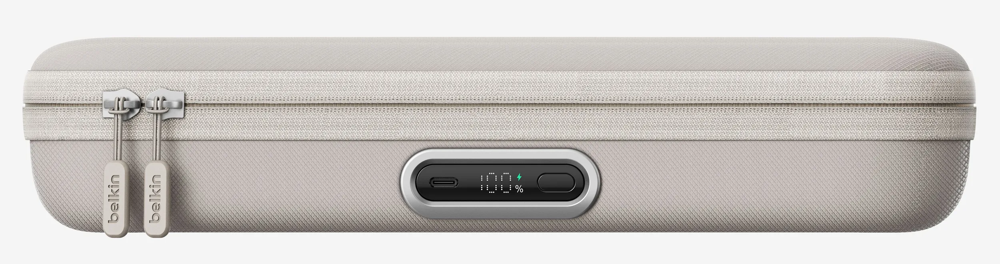

新款 Charging Case Pro 最大的變化在於，用户不再需要打開收納盒或拆出電池就能為其充電，貝爾金在盒體外側新增了一個正面 USB‑C 接口，玩家只需在盒子拉鍊保持閉合的狀態下連接電源，即可為內部電池補能。USB‑C 接口旁還配備了一塊小型顯示屏，用於實時顯示剩餘電量，方便用户掌握續航情況。相較上一代需要額外短線連接主機的設計，這一外部接口和可視化電量信息明顯簡化了日常使用流程。
內部結構方面，初代產品利用的是 Switch 2 機身自帶的翻折支架，而 Charging Case Pro 在重新設計電池模塊的同時，集成了一套可調節的獨立支架。玩家只需將 Switch 2 像插入底座那樣放到支架上，即可通過支架上的 USB‑C 接口為主機供電，實現邊玩邊充。這一設計不僅提升了放置穩定性，也更貼近家用底座的使用體驗，適合在旅途中或桌面環境下長時間遊戲。

收納功能上，Charging Case Pro 在原有空間佈局基礎上新增了多處細節設計：盒內設置了一個專門用於收納遊戲卡帶的小翻蓋區域，方便玩家隨身攜帶多張實體卡帶；同時配有網狀口袋，可放置線材或其他小型配件。貝爾金還在盒內預留了隱藏隔層，用於放置 AirTag 或 Tile 等定位標籤，便於用户在遺失或被盜時通過追蹤設備找回整個收納盒。
定價方面，Charging Case Pro 相比上一代上漲了 30 美元。首款 Switch 2 充電收納盒於去年 6 月上市，售價為 69.99 美元，而此次推出的 Pro 版本定價為 99.99 美元，目前已經開售。在維持 10，000mAh 電池容量的同時，新款通過外部充電接口、可視電量屏幕、集成可調支架以及更完善的收納與追蹤配合設計，將自己定位為面向重度掌機玩家的高階配件選擇。